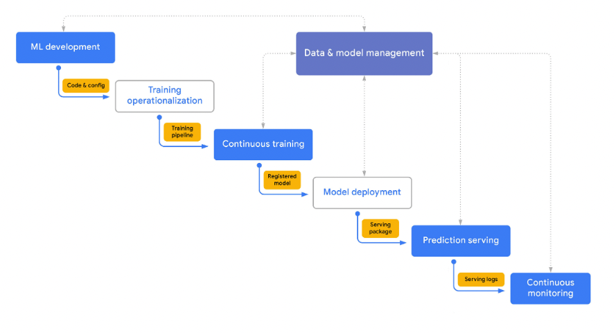
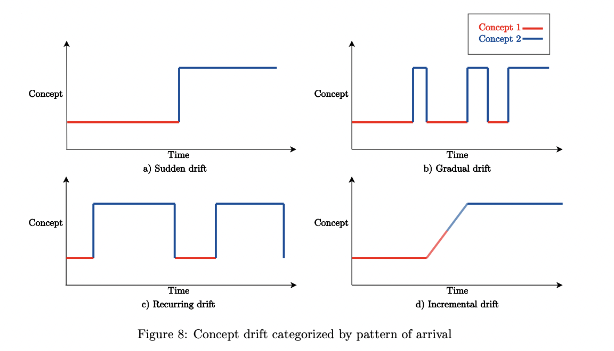

3 Rough literature review
3.1 Designing Machine Learning Systems
This book is about ML systems holistically, from model development through to model monitoring and retraining schedules
Most relevant chapters are Ch 1, 2, 7, 8, 10, maybe 11
From my perspective a lot of the narrative in this book assumes folks are using deep learning models, but most models in production are not deep learning
One paragraph at the beginning of Ch 7 seems to indicate that wrapping a model in an API such as FastAPI is easy (“all you have to do is…”) but then goes on to say that “deploying is easy if you ignore all the hard parts”
Several chapters highlight the need for managing multiple models, which can motivate some work on our part on model registry tooling I thought it was interesting how this book categorizes tools as orchestrators, schedulers, MLOps platforms, among others.
IMO our tools like vetiver don’t neatly fall into any of the tool categories outlined in this book; they work with an orchestrator or you could use them as part of your MLOps platform. Is that a problem? How do we best explain what these tools do?
There is a lot of discussion around using REST APIs. The main concern is the complexity with many APIs making many requests to each other, so brokers such as Kafka are held to the highest standard. (The trade off here of complexity is not worth it at this point?) (Actually, GitHub is moving more to REST, albeit away from GraphQL.)
There’s a different discussion about “reasonable scale” in Chapter 10, that is, companies that work with gigabytes or maybe terabytes of data a day. I think vetiver is an option for “reasonable scale” companies/models, where a REST API still makes the most sense. I spent a while wrestling with the online (predictions generated and returned as soon as requests arrive) vs. batch (predictions generated periodically).
I am debating changing my own language to synchronous vs. asynchronous. How to use the best language for clarity? “Batch prediction is a workaround for when online prediction isn’t cheap enough or fast enough.”
Noting another best practice: Having two different pipelines for training and inference is a common source for bugs for ML in production.
Monitoring toolbox: logs, dashboards, alerts. Depending on how DIY a developer is feeling, we have about 0.5/3 of these things. (What do we feel is our monitoring toolbox? How much is infrastructure dependent?) Michael
3.2 Machine Learning Operations (MLOps): Overview, Definition, and Architecture
This paper did a literature review, tool review, and a small set of expert interviews to create a definition of what MLOps is and includes. This paper views MLOps as DevOps principles/tooling applied to automating ML.
The result was a set of: Principles, like “workflow orchestration coordinates the tasks of ML via DAGs” and “Feedback loops are required to for quality assessment” Technical components, like “model registry” and “monitoring component” Roles, like “data scientist” and “DevOps engineer” Architecture, which is visualized in one of the most confusing (and worst IMO) diagrams I have ever seen 🤨
Big takeaway is that MLOps addresses the problem of data scientists managing ML workflows too manually
They create a paragraph-long definition, with this summary: “Essentially, MLOps aims to facilitate the creation of machine learning products by leveraging these principles: CI/CD automation, workflow orchestration, reproducibility; versioning of data, model, and code; collaboration; continuous ML training and evaluation; ML metadata tracking and logging; continuous monitoring; and feedback loops.”
3.3 MLOps Principles
From INNOQ (consulting) See adoption as 3 levels:
manual
ml pipeline
ci/cd
Continuous X MLOps is an ML engineering culture that includes the following practices: Ci/CD but also ct(raining)/cm(monitoring)
Talked a lot about the point system paper I had also seen ML scorecard
Lots of discussion around what reproducibility looks like: data versioning, version control, deploying feature engineering with model. They specifically mention that the same programming language should be used for training and deployment.
There is the idea of “loosely coupled architecture” which means that teams can test and deploy applications without requiring orchestration with other services. They suggest using cookiecutter templates to help with this, which doesn’t seem to fit the full criteria of what is described as loosely coupled architecture???
3.4 Google’s Practitioners Guide to MLOps
This white paper starts out with an overview of GCP’s perspective on the MLOps lifecycle and finishes with a focus on processes and capabilities.
This paper understands the MLOps cycle as seven stages, which are not totally sequential but somewhat iterative and integrated:

For this paper, it might not really be MLOps unless you are doing continuous retraining, although they do say things like, “If the ML system requires continuous training…”
This white paper outlines a set of core technical capabilities like ML pipelines, model training, etc.
There are three of these technical capabilities that our MLOps OSS tools aim to meet:
Model serving: Outlines different ways to serve models for prediction (including making online, offline/batch, streaming, and embedded predictions) and then talks about more advanced techniques like composite prediction routines (invoking models hierarchically).
Model monitoring: Encompasses both ops monitoring (like latency) and ML monitoring (like accuracy).
Model registry: Outlines the basics and extends to governing model launching from the registry.
3.5 From Concept Drift to Model Degradation: An Overview on Performance-Aware Drift Detectors
This paper outlines different kinds of concept drift and different names that are used for them. Concept drift can happen with different patterns in time:

3.6 ML scorecard
Notes from The ML Test Score: A Rubric for ML Production Readiness and Technical Debt Reduction By: Eric Breck, Shanqing Cai, Eric Nielsen, Michael Salib, D. Sculley
3.6.1 Tests for features and data
| Test | Example |
|---|---|
| Feature expectations are captured in a schema. | writing down expectations, then compare to data |
| All features are beneficial. | and then compare them to the data |
| No feature’s cost is too much. | consider not only added inference latency and RAM usage, but also upstream data dependencies |
| Features adhere to meta-level requirements. | programmatically enforce these requirements (such as user privacy), so that all models in production properly adhere to them. |
| The data pipeline has appropriate privacy controls. | test that access to pipeline data is controlled as tightly as the access to raw user data, especially for data sources that haven’t previously been used in ML. Finally, test that any user-requested data deletion propagates to the data in the ML training pipeline, and to any learned models |
| New features can be added quickly. | determine what is considered “quickly”, suggested 1-2 months |
| All input feature code is tested. | bugs in features may be almost impossible to detect once they have entered the datageneration process |
3.6.2 Tests for model development
| Test | Example |
|---|---|
| Model specs are reviewed and submitted. | everything is in a repo |
| Offline and online metrics correlate. | check your bias, do A/B tests (even if small scale) |
| All hyperparameters have been tuned. | grid search, or other internal hyperparameter tuning |
| The impact of model staleness is known. | again, A/B tests |
| A simpler model is not better. | test against baseline model |
| Model quality is sufficient on important data slices. | release tests for models can impose absolute thresholds (e.g., error for slice x must be <5%), to catch large drops in quality, as well as incremental (e.g. the change in error for slice x must be <1% compared to the previously released model). |
| The model is tested for considerations of inclusion. | Tests that can be run include examining input features to determine if they correlate strongly with protected user categories, and slicing predictions to determine if prediction outputs differ materially when conditioned on different user groups. |
3.6.3 Tests for infrastructure
| Test | Example |
|---|---|
| Training is reproducible. | deterministic training, ensembling is also suggested |
| Model specs are unit tested. | tests of API usage and tests of algorithmic correctness |
| The ML pipeline is Integration tested. | integration test should run both continuously as well as with new releases of models or servers, in order to catch problems well before they reach production |
| Model quality is validated before serving. | test for both slow degradations in quality over many versions (loose thresholds in tests) as well as sudden drops in a new version (compare 2 versions with tight thresholds) |
| The model is debuggable. | internal tool that allows users to enter examples and see how the a specific model version interprets it |
| Models are canaried before serving. | testing that a model successfully loads into production serving binaries and that inference on production input data succeed |
| Serving models can be rolled back. | can quickly revert to previous version |
3.6.4 Tests for monitoring
| Test | Example |
|---|---|
| Dependency changes result in notification. | make sure that your team is subscribed to and reads announcement lists for all dependencies |
| Data invariants hold for inputs. | (data drift) measure whether data matches the schema and alert when they diverge significantly |
| Training and serving are not skewed. | log a sample of actual serving traffic, compute distribution statistics on the training features and the sampled serving features |
| Models are not too stale. | measure the age of the model at each stage of the training pipeline |
| Models are numerically stable. | explicitly monitor the initial occurrence of any NaNs or infinities |
| Computing performance has not regressed. | slice (compute) performance metrics not just by the versions and components of code, but also by data and model versions |
| Prediction quality has not regressed. | measure statistical bias in predictions, periodically add new training data |
3.6.5 Computing test score
Each test: - 0.5 points for executing test manually, with results documented and distributed - 1 point for automatic testing in place, to be repeated regularly Sum score for each of the 4 sections Final test score from taking the MINIMUM of the scores
| Points | Description |
|---|---|
| 0 | More of a research project than a productionized system |
| (0,1] | Not totally untested, but it is worth considering the possibility of serious holes in reliability. |
| (1,2] | There’s been first pass at basic productionization, but additional investment may be needed. |
| (2,3] | Reasonably tested, but it’s possible that more of those tests and procedures may be automated. |
| (3,5] | Strong levels of automated testing and monitoring, appropriate for mission-critical systems. |
| >5 | Exceptional levels of automated testing and monitoring. |